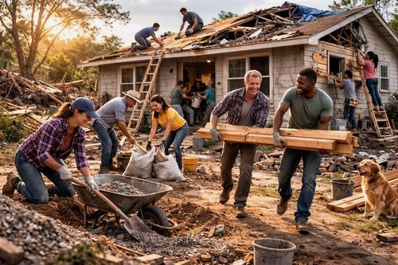
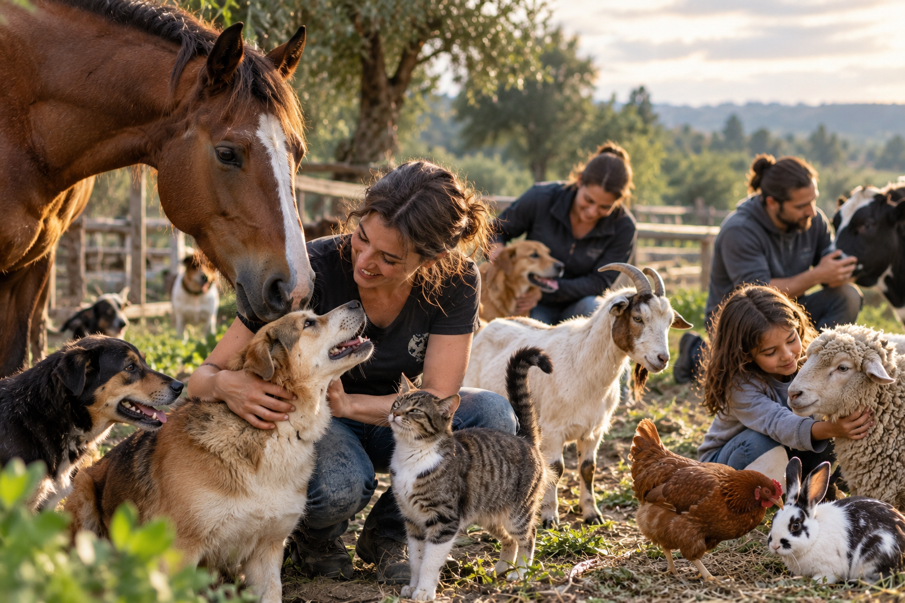
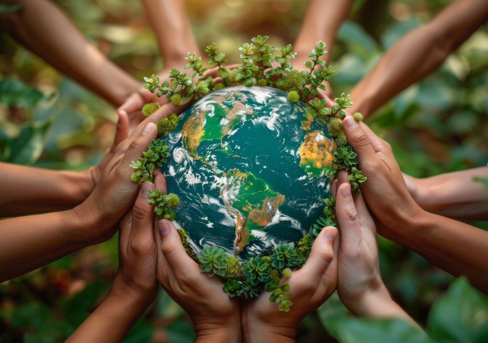

Our Causes
At Your Global Voice, we are dedicated to defending human rights and dignity, providing humanitarian assistance to those in need, protecting animal welfare, and preserving our environment for future generations.
United by Compassion. Driven by Purpose. Committed to Change.

MY VOICE + YOUR VOICE = OUR VOICE

Human Rights & Dignity
Standing against persecution, discrimination, and injustice in all forms, and advocating for the fundamental rights and dignity of all individuals.
Read More →
At Your Global Voice, we believe that every individual deserves to live with dignity, freedom, and respect. We stand with those facing persecution, discrimination, and injustice, regardless of their background or beliefs. Through advocacy, compassionate assistance, and community support, we seek to protect fundamental human rights, amplify unheard voices, and help build a world where everyone is treated with fairness and humanity.

Humanitarian Assistance and Relief
Providing support and relief to individuals and communities in need, and helping to build stronger, more resilient communities.
Read More →
To provide charitable humanitarian assistance and relief to individuals and communities in need through the provision of food, clothing, housing assistance, essential supplies, and emergency assistance.

Animal Welfare Assistance
Caring for animals and supporting their well-being, with compassion for every life.
Read More →
To provide charitable financial assistance and support for the care and well-being of animals.

Environmental Conservation and Sustainability
Protecting our planet, preserving natural resources, and restoring the environment to create a healthier, more sustainable future for generations to come.
Read More →Read Less →
To conduct and support charitable environmental conservation and sustainability initiatives, including the preservation and restoration of forests, the planting of trees, the protection of natural resources, and environmental improvement initiatives.
Purpose is our starting point.
Learn about the areas that may shape future initiatives.